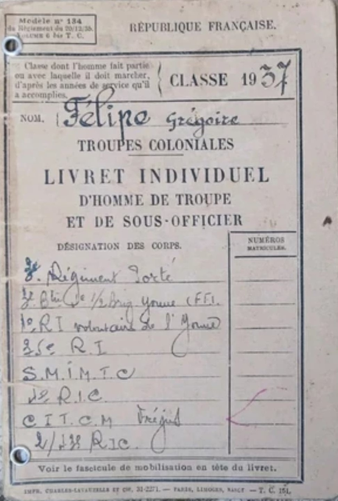

Les documents coloniaux regroupent les papiers administratifs et militaires utilisés dans les territoires de l’Empire Français : Afrique du Nord, Afrique Occidentale Française, Indochine, Levant, Madagascar et autres possessions. Ils incluent cartes d’identité, livrets militaires, ordres, correspondances et documents de service.
Ils permettent d’identifier les militaires coloniaux, d’organiser les unités, de gérer les déplacements, de transmettre les ordres et de maintenir l’administration militaire dans les territoires éloignés de la métropole.
Les documents reflètent la structure militaire coloniale : tirailleurs, spahis, goumiers, légionnaires, bataillons d’infanterie coloniale, ainsi que les services administratifs locaux dépendant du ministère des Colonies.
Entre 1915 et 1945, les troupes coloniales jouent un rôle majeur dans les conflits mondiaux. Les documents produits dans les colonies témoignent de la mobilisation, de l’administration locale, des recrutements et des opérations militaires menées loin du territoire métropolitain.
Ces documents sont essentiels pour comprendre l’organisation militaire coloniale, retracer la carrière des soldats indigènes et étudier l’administration française dans les territoires d’outre‑mer.